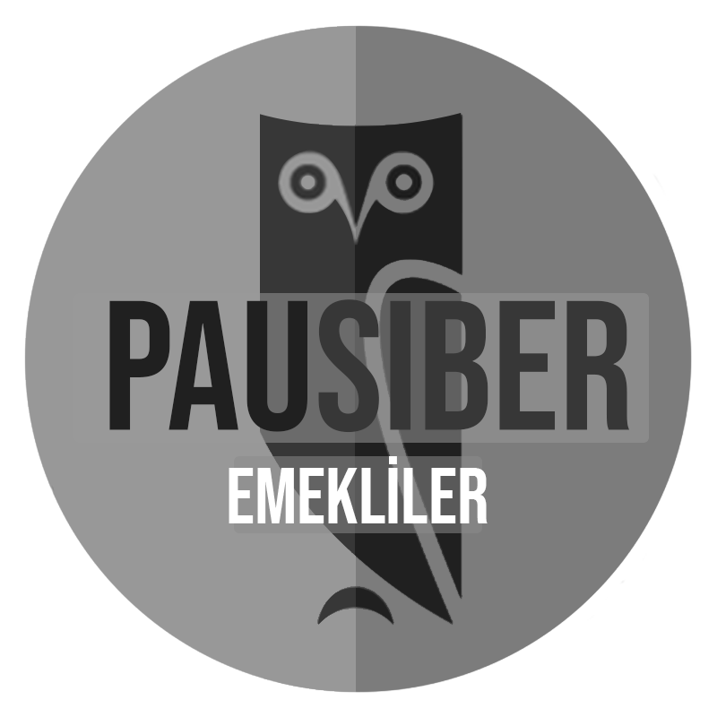

Pamukkale Üniversitesi Siber Güvenlik Topluluğu
@siberpau @PauSiber
@pausiber t.me/siberpau
Tanışma Etkinliğimize Hoşgeldiniz
Peki Neden Buradasınız?
Sizce, Biz Ne Yapıyoruz?

Böyle bir şey yok arkadaşlar!
Biz Kimiz?
Güvenli kod geliştirmeyi, siber güvenlik farkındalığı oluşturmayı ve ülkemizin ihtiyacı olan nitekli iş gücünü üretmeyi amaç edinmiş insan topluluğuyuz.
Tamam da biz ne yapıyoruz?
Geliştiriyor, üretiyoruz. Katkıda bulunuyoruz, kırıyoruz, bozuyoruz, düzeltiyoruz.
Eğitimler düzenliyoruz.
Etkinliklere gidiyoruz.
Etkinlikler yapıyoruz.
CTF'ler düzenliyoruz.
Kod yazıyoruz.
Ekibimiz Kimlerden Oluşuyor
Ben, Sen, O , Bizim Oğlan, Bizim Kız
20 kişiyiz ve hepimiz Bilgisayar Mühendisliği öğrencileriyiz, perdelerimizi kaldırdığımızda yüzlerce oluveriyoruz.
Abdullah Bağyapan
Abdullah Bağyapan Kimdir?
“Amerikan futbolu oynamayı ve izlemeyi seven,DevOps teknolojileriyle ilgilenen biri.”
İlgi Alanları
İletişim
@abdullahbagyapan
@abdullahbagyapan
@abdullahbagyapan
Abdülsamet Aydınhan
Abdülsamet Aydınhan Kimdir?
“Formula 1 izlemeyi seven takip etmekten hoşlanan gezmeyi ve yeni şeyler görmeyi seven ve frontend teknolojilerine ilgi duyan biri.”
İlgi Alanları
İletişim
@sametaydinhan
@sametaydinhan
@samet_aydinhan
@sametaydinhan
Altay Şimşek
Altay Şimşek Kimdir?
“Formula1 izlemeyi ve takip etmeyi seven,front-end teknolojilerine ilgi duyan kişi.”
İlgi Alanları
İletişim
@altay.simsek
@altaysimsek
@altitans
Asude Fışkın
Asude Fışkın Kimdir?
“Rap dinlemeyi ve araba kullanmayı seven, front-end alanına ilgi duyan kişi.”
İlgi Alanları
İletişim
@asuf29
@asuf29
@asuf29
Berna Varol
Berna Varol Kimdir?
“Yeniliğe açık, farklı şeyleri denemeyi seven biriyim.”
İlgi Alanları
İletişim
@berna_varoll
@brrna
@bernavarol
Damla Erva Kasal
Damla Erva Kasal Kimdir?
“Yüzmeyi ve Film & Dizi izlemeyi seven, Kahve bağımlısı, Front-end alanına ilgi duyan kişi.”
İlgi Alanları
İletişim
@damlaervakasal
@damlaervakasal
@damla.kasal1
@damlaervakasal
Deniz Ök
Deniz Ök Kimdir?
“Spor yapmayı seven, astronomi tutkunu, kodlamayı seven bir kişi”
İlgi Alanları
İletişim
@denizok2020
@DenizOk20
@denizok2020
Emrullah Cirit
Emrullah Cirit Kimdir?
“Müzik dinlemeyi, yabancı dizi ve Formula 1 yarışlarını izlemeyi seven bir insan, ara sıra kahvelere de ilgi duyar”
İlgi Alanları
İletişim
@Iamemrullah
@emrullahcirit
@emrullah.cirit
Enes Kaya
Enes Kaya Kimdir?
“Kendimi geliştirmeyi, yeni şeyler denemeyi ve öğrenmeyi severim. ”
İlgi Alanları
İletişim
@eneskaya12
@ensk05
@eneskay_
@eneskaya25
Furkan Dolunay
Furkan Dolunay Kimdir?
“Backend Dev, Grafiker, Fotoğrafçı, sporla ilgilenen biriyim.”
İlgi Alanları
İletişim
@makerologist_
@Makerologist0
@makerologist_
@furkan-dolunay
Havva Nur
Durudeniz
Havva Nur Durudeniz Kimdir?
“ Yeni yerler keşfetmeyi ve müzik dinlemeyi seven, alışveriş bağımlısı, kedici bir insan. ”
İlgi Alanları
İletişim
@hdrdnz
@havvanurdrdnz
@havvanurdrdnz
Hazal Gültekin
Hazal Gültekin Kimdir?
“ Araştırmaya, Okumaya, Yazmaya Meraklı, Gezmeyi ve Eğlenmeyi Seven ”
İlgi Alanları
İletişim
@HazalGultekin
@hazal-gültekin
@hazallgltkn
@hazall.gltkn
@Hazallgltkn
@hazallgultekin
Işınnur Günay
Işınnur Günay Kimdir?
“Müzikle ilgilenen,film izlemeyi ve oyun oynamayı seven biriyim.”İlgi Alanları
İletişim
@isinnurgunay
@isinnur
@isinnur
İlknur Doğan
İlknur Doğan Kimdir?
“Dizi,film izlemek ve kitap okumaktan keyif alan biriyim.”
İlgi Alanları
İletişim
@ilknur.ddogan_
@ilknurdgn
@ilknurdgn
Mehmet Mert Kırgıl
Mehmet Mert Kırgıl Kimdir?
“Futbol ve dizi izlemeyi,müzik dinlemeyi severim.”
İlgi Alanları
İletişim
@mertkirgil
@mertkrgl
@mertkırgıl
Murat Tanrıverdi
Murat Tanrıverdi Kimdir?
“Backend Dev, gezmeyi, kahveyi, kod yazmayı seven ve sürekli teknoloji değiştiren dümdüz insan.”
İlgi Alanları
İletişim
@muratcandev
@murattanriverdi
@muratcan.tanriverdi
@murat-tanriverdi
Onur Özbay
Onur Özbay Kimdir?
“Backend Dev, Antakyalı, Gamer, Nolan filmlerini ve futbolu çok sever .”
İlgi Alanları
İletişim
@onurozbay7
@onurozbay7
@ozzieonur
@ozzieonur
Osman Emre Ömürlü
Osman Emre Ömürlü Kimdir?
“Kendini geliştirmeye çok hevesli,
iOS Developer olmak isteyen biri.”
İlgi Alanları
iOS Development
Swift ✨
Motosiklet 🏍️💨
Futbol ✋😛🤚
İletişim
oe.omurlu
oemurlu
oemurlu
oemurlu
“oemurlu.dev”
Ömer Faruk Birgül
Ömer Faruk Birgül Kimdir?
“console.log("Hello World!")
Pop kültür Geek'i, eğlenceyi sever, bazen de kod yazar.”
İlgi Alanları
İletişim
@omer_f_birgul
@Omar-f-Birgul
@omar_f_birgul
Semanur ÖZKAN
Semanur Özkan Kimdir?
“Çizim yapmayı, müzik dinlemeyi ve kitap okumayı seven biriyim.”
İlgi Alanları
İletişim
@sema.ozkan_
@semaozkan
@semanurozkan
Serdar Kış
Serdar Kış Kimdir?
“Filmler, Oyunlar ve Uyku”
İlgi Alanları
İletişim
@Serdarks
@serdarkis
Sezgi ALTAN
Sezgi Altan Kimdir?
“Frontend Dev, UI Designer, Gamer”
İlgi Alanları
İletişim
Tuna BOSTANCIBAŞI
Tuna Bostancıbaşı Kimdir?
“Fitnessla ilgilenen, film tutkunu, genelde türkü dinleyen ve frontend alanına ilgi duyan kişi”
İlgi Alanları
İletişim
@tuna.bstcn
@Tunacodin
Ufuk Can Kurt
Ufuk Can Kurt Kimdir?
“Frontend Dev, Kitap Okumayı ve Oyun Oynamayı Seven Biri”
İlgi Alanları
İletişim
@ufukcankurt_
@ufukcankurt
@ufukcankurt
Emekliler
Alp Eren IŞIK
Alp Eren IŞIK Kimdir?
“Siber Güvenlik Sevdalısı, Linux aşığı, Eğitmen, PaüSiber Temsilcisi.”
İlgi Alanları
İletişim
@isikerenalp @isikerenalp @isik_erenalp
Aykut Şahinler
Aykut Şahinler Kimdir?
“Frontend Dev,
Adalı, Otel Sahibi”
İlgi Alanları
İletişim
@aykutsahinler @aykutsahinler @aykutsahinler
Barış ESEN
Barış Esen Kimdir?
“Kendi öğrendiğim bilgileri, diğer kişilerle paylaşmayı seviyorum. Yeni şeyler öğrenmeye bayılıyorum.”
İlgi Alanları
İletişim
@barisesen_dev @barisesen
iletisim@barisesen.com
https://barisesen.com
Batın ERYILMAZ
Batın Eryılmaz Kimdir?
“Software Engineer @Trendyol ,
Ex: Leo AR, Kommunity, MojiLaLa
Apple Fan Boy,
Alışveriş, daha çok alışveriş”
İlgi Alanları
İletişim
@batin.eryilmaz @batin
batineryilmaz@icloud.com
batin.dev
Beyza Kaynar
Beyza Kaynar Kimdir?
“Juliet, İzmir Güzeli, Karambit”
İlgi Alanları
İletişim
@kaynarbeyzaa @kaynarbeyza
@kaynarbeyzaa
Bora Tanrıkulu
Bora Tanrıkulu Kimdir?
“Kendini geliştirmeye çalışan bir insan.”boratanrikulu.dev
İlgi Alanları
İletişim
@boratanrikulu_ @boratanrikulu
boratanrikulu.dev
Çağatay ÇALI
Çağatay Çalı Kimdir?
“Açık kaynağı seven ve destekleyen birisiyim, insanları açık kaynak geliştiriciliği konusunda heveslendirmek mottosuyla hareket ediyorum.”
İlgi Alanları
İletişim
@cagataycali @cagataycali
cagataycali@icloud.com
Elif Bihter Kuşçu
Elif Bihter Kuşçu Kimdir?
“Gezmeyi Seven, 35.5, Film & Dizi Seven Sıradan Biri”
İlgi Alanları
İletişim
@bihterkuscu
@bihterkuscu
@BihterKuscu
Elifnur Bulut
Elifnur Bulut Kimdir?
“ Mobil uygulama geliştiricisi, alışveriş bağımlısı, cat person 😸 ”
İlgi Alanları
İletişim
@elifbulut
@el.bulut
@elifnurbulut
Erdem Oflaz
Erdem OFLAZ Kimdir?
“Sıradan bir insan”
İlgi Alanları
TR ZAFİYETLERİ
İletişim
e2d3m
erdemoflaz
info@erdemoflaz.com
erdemoflaz.com
Faruk Özdemir
Faruk Özdemir Kimdir?
“Teknolojiye ve Tarihe Meraklı, Okumayı ve Araştırmayı Seven Bir Kişi.”
İlgi Alanları
İletişim
@fozdemir16
@fozdemir16
@fozdemir16
Feyza Eda Türk
Feyza Eda Türk Kimdir?
“Android Dev, Yemek Yemeyi, Alışveriş Yapmayı, Gezmeyi, Mangalı Seven ”
İlgi Alanları
İletişim
@feyzaedaturk
@feyzaeda
@fetfeyzaeda
@feyzaedaturk
Feyzi Yuşa KARABABA
Feyzi Yuşa Karababa Kimdir?
“PaüSiber'in ilk başkanı. Havelsan firmasında çalışıyorum. Kendini geliştirmeyi seven, ileride siber güvenlik uzmanı olmak isteyen kişi. (oldu ✔️)”
İlgi Alanları
İletişim
@fykarababa @Fykarababa
yusakarababa@gmail.com
Gürkan ŞEN
Gürkan Şen Kimdir?
“Justlife şirketinde Senior Frontend Engineer.”
“Ex: Kommunity.com'da Product Manager.”
İlgi Alanları
İletişim
@gurkansenn @gurkansen
gurkan.sen35@gmail.com
Hamdiye KAYA
Hamdiye Kaya Kimdir?
“Bilgisayar Mühendisi. Kendimi geliştirip, bir şeyler yapabilmek için uğraşıyorum.Aynı zamanda bir şirkette yazılım geliştirici olarak çalışıyorum.”
İlgi Alanları
İletişim
@hamdiye
hamdyekaya@gmail.com
Hasan Tezcan
Hasan Tezcan Kimdir?
“https://hasantezcan.dev”
İlgi Alanları
JavaScript
ReactJS
NodeJS
GNU/Linux 🐧
Bilişim Hukuku 🖥️⚖️
İletişim
hasantezcann
hasantezcan
hasantezcan
“https://hasantezcan.dev”
Hazal Sıla Yaprak
Hazal Sıla Yaprak Kimdir?
“Front-end Dev👩🏻💻, Hamarat🍲, Müzik Sever🎧, Domestic🏠, Kedici😻”
İlgi Alanları
- Front-end💻
- VueJS
- Tasarım🖌
- Sanat🎤🎭
İletişim
@hazalsilayaprak
@hazalsilayaprak
@hazalsilayaprak
@hazalsilayaprak
Mehmet Rahmi Yüceöz
Mehmet Rahmi Yüceöz Kimdir?
“Gömülü sistem ve robot meraklısı, Python aşığı, Az bir şey de C Lang sever.”
İlgi Alanları
İletişim
@MrYcz
@yuceozmehmet
Remzi DALYAN
Remzi Dalyan Kimdir?
“Backend Dev, Kodlamayı, Oyun Oynamayı Seven”
İlgi Alanları
İletişim
RemziDalyan
remzidalyan
rdalyan@outlook.com
remzidalyan@icloud.com
Hangi Etkinlikleri Düzenledik ?
Tanışma Kahvaltısı (2021)
Tanışma Kahvaltısı (2019)
Frontend Eğitimi (2021)
Frontend Eğitimi (2019)
Herkes için GNU/LINUX (2021)
Herkes için GNU/LINUX (2019)
Front-End Workshop
Herkes için Git-Github
Javascript Eğitimi
CTF - Kahoot
Mazeret Yok
Turkcell ile Android DEV
Web Nasıl Çalışır?
Geleneksel PauSiber Mangalı
Flutter ile Mobil Uygulama Geliştirme
Python 101
Hangi Etkinliklere Katıldık ?
Tanışma Etkinliği :)
Havelsan Express Hackathon
HACKTRICK
Mustafa Akgül
Özgür Yazılım Yaz Kampı
2018
Siber Güvenlik Kümelenmesi
HACKNBREAK - 2018
PHP Konf 2018
WTK 18
Mustafa Akgül
Özgür Yazılım Yaz Kampı
2019
İzmir Google DEV Fest
ÖYK KIŞ 2020
“https://pausiber.xyz”
Pau Siber Plan
plan.pausiber.xyz
Bizi dinlediğiniz için teşekkür ederiz
Sorular ??